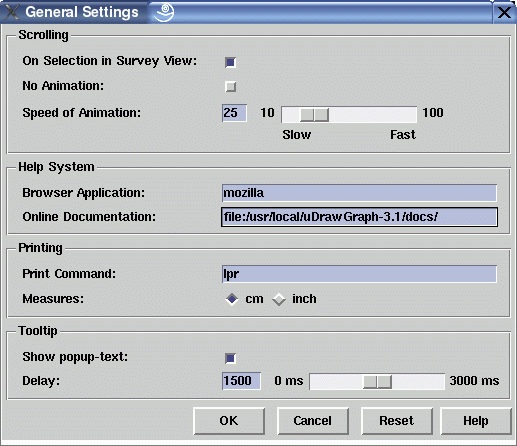

General Settings Dialog Window
This dialog window is used to control some general settings of uDraw(Graph). The first set of dialog elements deals with the scrolling management. After opening a survey view from a detail view with menu View/Open Survey View, the system will automatically scroll to a particular node in the detail view when the same node is selected in the survey view. This scrolling is animated by moving the visible area of the base window smoothly towards the selected node. The navigator and the find operation use animation, too. The animation's moving speed can be set with the slider "Speed of Animation" or turned off with check button "No Animation". Further, the behavior that selection in a survey view will automatically scroll in the detail view can be switched off with check button "On Selection in Survey View".
Help System Options
uDraw(Graph) generates calls to an external browser for viewing the HTML online documentation when the user activates the help system by pressing a "Help" button in some dialog window or by using the Help menu.
Windows® only: The "Browser Application" field is not used. Instead your default browser is used for viewing the HTML online documentation.
UNIX® and Linux® only: The "Browser Application" field is used to set the local or absolute file name of the browser application used for viewing the HTML online documentation. The Netscape® Navigator®, Mozilla® or Firefox® browser are preferred in order to reuse an open browser when consecutive calls to the help system are invoked by the user; with other browsers, you will get a new browser window each time you use the online help system. If you do not get a browser window with the online documentation after pressing the "Help" button in a dialog then type the content of the "Browser Application" field in a shell to see if the browser starts.
The "Online Documentation" field is an URL which specifies a directory where the documentation is contained. When using the help system, the file name of a particular HTML page in the documentation is added after this URL. Usually, the documentation can be found in the "docs" directory of the distribution package. This is the default place where the system will look when the "Online Documentation" field is empty.
Printing Options
The settings for printing are used in the
File/Print...
dialog window.
In the "Print Command" entry you have to specify the command and
options to print a PostScript® file on your computer.
Of course, the name of the PostScript® file is not entered here,
it is a temporary file created when the graph is actually printed.
On UNIX® and Linux® platforms, please check that you can print
a PostScript® file in a shell using the command and options
entered here.
On the Microsoft® Windows® platform, printing from uDraw(Graph)
is only possible when you have a local or network printer that
supports the PostScript® format.
In this case, please enter "print /d <device>" if you have a printer
connected directly to the LPT or COM port or
"print /d//<printserver>/<printername>" if there is a printer
connected to your network.
Please refer to your printer documentation or system administrator
to find out more about printing.
As a work-around, you can
print
or
export
the graph to a file and import it in a suitable program that has
direct access to the printer
recommends
The "Measures" radio button specifies the unit (cm or inch) used to display page and graph size in the print dialog window.
Tooltip Options
With the tooltip settings you can control the yellow pop-up windows that automatically appears when the mouse pointer is over a node or edge with tooltip information. The tooltip text or a particular node or edge is specified with the INFO attribute. You can also use the graph editor application to set tooltips to nodes and edges. In this dialog you can switch off the tooltips and you can control the delay between the time when the node or edge is reached by the mouse pointer and the appearance of the tooltip.
Dialog Elements of the General Settings Window
-
On Selection in Survey View
To switch the auto-selection feature. If auto-selection is on and the user selects a node in a survey view then uDraw(Graph) automatically scrolls to the same node in the corresponding detail view. More information about multi-view can be found in the concepts document. -
No Animation
Use this check button to turn off scrolling animation completely. Animation is used for node selections in a survey view (see above), for the navigator and the find operation to scroll the visible part of a base window towards a particular node. -
Speed of Animation
With this slider, the speed of scrolling animation can be set. Use a fast setting on slow computers to get a sufficient result. Animation is used for node selections in a survey view (see above), for the navigator and the find operation to scroll the visible part of a base window towards a particular node. -
Browser Application
The command to start the HTML browser on your computer. Read above for details. -
Online Documentation
Directory where the uDraw(Graph) online documentation is located. This is usually the "docs" directory of the distribution (i.e. "$UDG_HOME/docs", but do not use shell variables such as $UDG_HOME in this dialog, because the browser may not accept this). The directory entered here is an URL, so for an online documentation on the local file system, the URL has to start with "file:/", but you can also use a remote URL starting with "http://". Read above for details. -
Print Command
Enter the command and options to print a PostScript® file on your computer here. Read above for details. -
Measures
Use these radio buttons to switch between "cm" and "inch" measure units in the File/Print... dialog window. -
Show pop-up text
Use this check button to switch automatic tooltip text on or off for nodes and edges. Read above for details. -
Delay
Use this slider to control the delay between the time when the user moves the mouse over a node or edge with tooltip information and the appearance of the pop-up window with the tooltip text. The delay is given in milliseconds. -
Ok
Push button to accept the current settings of this dialog window. Without pressing this button, modifications to these options are not considered. -
Cancel
Push button to close the general settings dialog window without performing any action. -
Reset
Push button to undo any modification to these options which were not confirmed using the "Ok" push button yet. So reset goes back to the current settings. -
Help
Push button to start the online help system with this page.